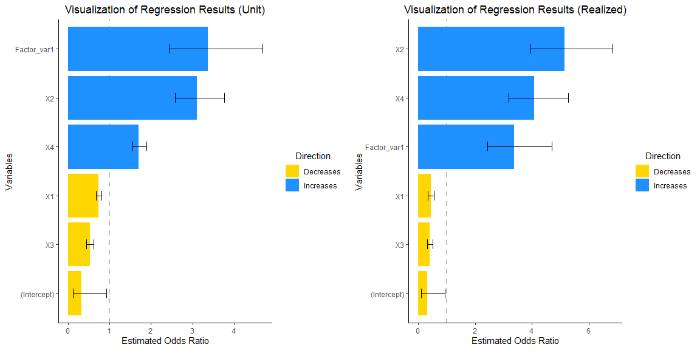
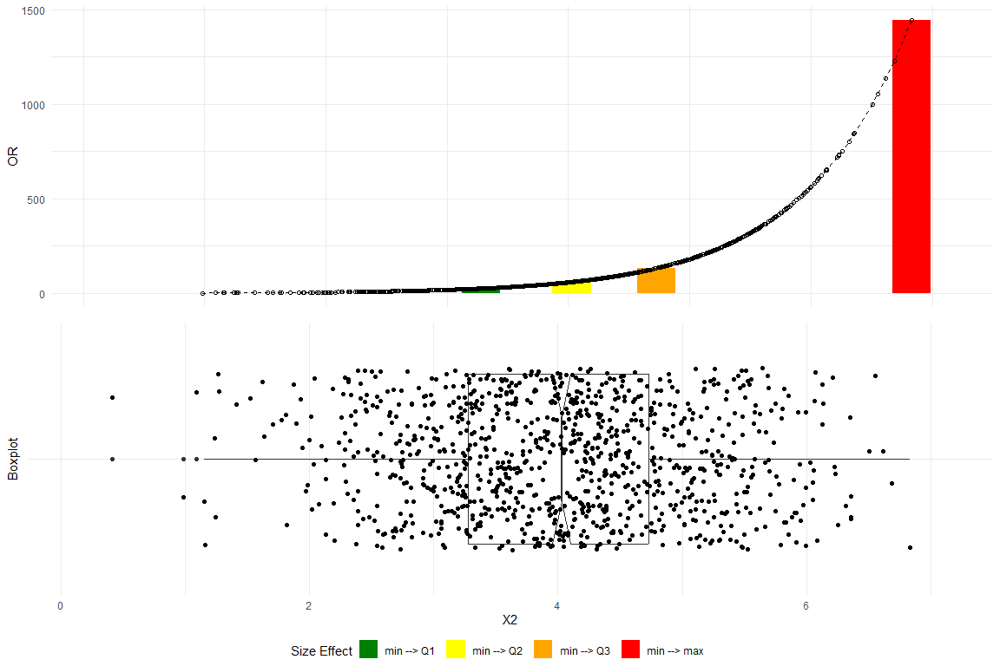
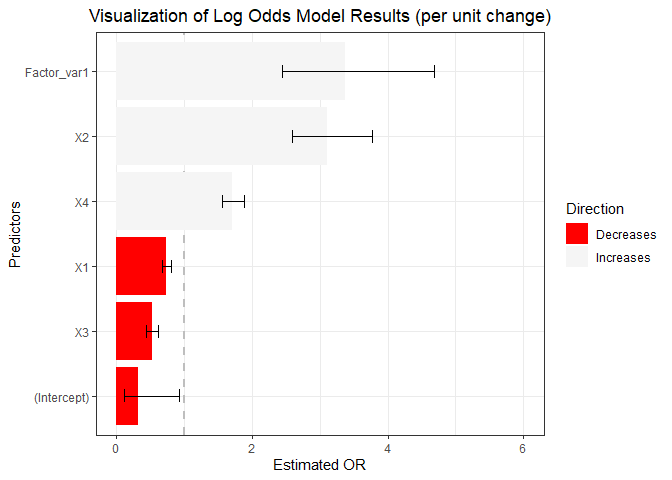
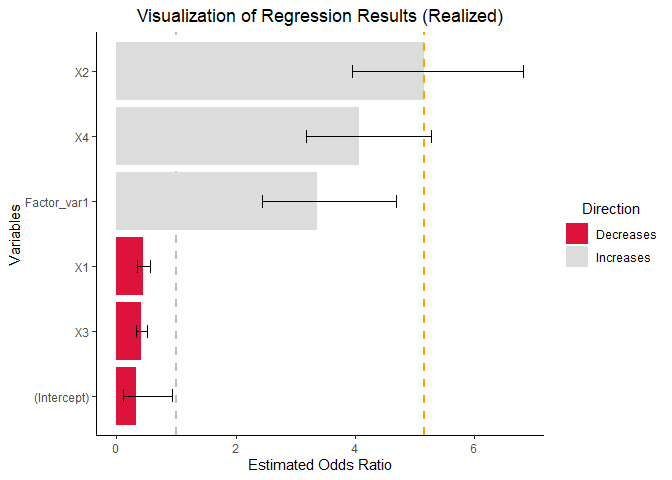

RegressViz
The size of the regression weight depends on the other predictor variables included in the equation and is, therefore, prone to change across situations involving different combinations of predictors (Dunlap and Landis 1998).
Any interpretations of weights must be considered context-specific (Thompson 1999).
Dissemination of complex information derived from sophisticated statistical models requires diligence (Chen 2003).
The goal of RegressViz is to enhance the interpretation of regression results by providing visualizations that integrate empirical data distributions. This approach facilitates a more thorough understanding of the impacts of changes exceeding one unit in the independent variables on the dependent variable for models fitted within Linear Models (LM), Generalized Linear Models (GLM), and Elastic-Net Regularized Generalized Linear Models (GLMNET) frameworks.
Installation
You can install the current version of RegrCoeffsExplorer from GitHub with:
library(devtools)
devtools::install_github("kaushikrohit004/RegressViz-Empirical-Coefficient-Explorer",
ref = "main",
dependencies = TRUE,
build_vignettes = TRUE)Alternatively, you can use the remotes library with the following command: remotes::install_github().
A Very Brief Recap on Logistic Regression
Logistic regression (McCullagh and Nelder 1989) is a statistical method used for binary classification. Unlike linear regression, which predicts continuous outcomes, logistic regression predicts the probability of a binary outcome (1 or 0, Yes or No, True or False). The core function in logistic regression is the logistic function, also known as the sigmoid function, which maps any input into the range (0, 1), making it interpretable as a probability. In logistic regression, we model the log odds (logarithm of Odds Ratio) of the probability as a linear function of the input features.
Sigmoid function is defined as:
Probability of success is calculated in the following manner:
Odds Ratio is:
Log Odds or the Logistic Transformation of the probability of success is:
Change in log odds when one predictor variable () increases by one unit, while all other variables remain unchanged:
Therefore, coefficient shows expected change in the Log Odds for a one unit increase in . Thus, expected change in the Odds Ratio is . Finally, expected change in the Odds Ratio if changes by k units whilst all other variables remain unchanged is or .
Examples
Consider implications of a change exceeding one unit on the Odds Ratio
To generate a dataset for logistic regression analysis, we simulate four continuous predictor variables and one categorical predictor variable. The continuous predictors are sampled from a normal distribution, each with distinct means and standard deviations. The categorical predictor is generated as a dummy variable with two levels. The binary response variable is calculated by applying a logistic function to a linear combination of the predictors, thereby transforming the latent variable to a probability scale, which serves as the basis for generating binary outcomes through a binomial sampling process.
library(RegrCoeffsExplorer)
library(gridExtra)
# Set seed for reproducibility
set.seed(1945)
# Set the number of observations
n = 1000
# Random means and SDs
r_means = sample(1:5, 4, replace = TRUE)
r_sd = sample(1:2, 4, replace = TRUE)
# Generate predictor variables
X1 = rnorm(n, mean = r_means[1], sd = r_sd[1])
X2 = rnorm(n, mean = r_means[2], sd = r_sd[2])
X3 = rnorm(n, mean = r_means[3], sd = r_sd[3])
X4 = rnorm(n, mean = r_means[4], sd = r_sd[4])
# Create a dummy variable
F_dummy=sample(1:2, n, replace = TRUE) - 1
# Convert to factor
Factor_var=factor(F_dummy)
# Define coefficients for each predictor
beta_0 = -0.45
beta_1 = -0.35
beta_2 = 1.05
beta_3 = -0.7
beta_4 = 0.55
beta_5 = 1.25
# Generate the latent variable
latent_variable = beta_0 + beta_1*X1 + beta_2*X2 + beta_3*X3 + beta_4*X4 +beta_5*F_dummy
# Convert the latent variable to probabilities using the logistic function
p = exp(latent_variable) / (1 + exp(latent_variable))
# Generate binomial outcomes based on these probabilities
y = rbinom(n, size = 1, prob = p)
# Fit a GLM with a logistic link, including the factor variable
glm_model = glm(y ~ X1 + X2 + X3 + X4 + Factor_var,
family = binomial(link = "logit"),
data = data.frame(y, X1, X2, X3, X4, Factor_var))
grid.arrange(vis_reg(glm_model, CI = TRUE, intercept = TRUE,
palette = c("dodgerblue", "gold"))$"SidebySide")
Note that upon consideration of the empirical distribution of data, particularly concerning the influence on the response variable, y, attributable to the interquartile change (Q3-Q1) in the dependent variables, there is a discernible enlargement in the magnitudes of coefficients X2 and X4.
Let us delve further into the underlying reasons for this phenomenon.
Check estimated coefficients
summary(glm_model)
#>
#> Call:
#> glm(formula = y ~ X1 + X2 + X3 + X4 + Factor_var, family = binomial(link = "logit"),
#> data = data.frame(y, X1, X2, X3, X4, Factor_var))
#>
#> Coefficients:
#> Estimate Std. Error z value Pr(>|z|)
#> (Intercept) -1.12972 0.54095 -2.088 0.0368 *
#> X1 -0.30907 0.04524 -6.831 8.42e-12 ***
#> X2 1.13339 0.09617 11.785 < 2e-16 ***
#> X3 -0.65286 0.08637 -7.559 4.06e-14 ***
#> X4 0.53535 0.04935 10.848 < 2e-16 ***
#> Factor_var1 1.21505 0.16635 7.304 2.79e-13 ***
#> ---
#> Signif. codes: 0 '***' 0.001 '**' 0.01 '*' 0.05 '.' 0.1 ' ' 1
#>
#> (Dispersion parameter for binomial family taken to be 1)
#>
#> Null deviance: 1371.37 on 999 degrees of freedom
#> Residual deviance: 930.71 on 994 degrees of freedom
#> AIC: 942.71
#>
#> Number of Fisher Scoring iterations: 5Obtain Odds Ratio (OR)
exp(summary(glm_model)$coefficients[,1])
#> (Intercept) X1 X2 X3 X4 Factor_var1
#> 0.3231247 0.7341269 3.1061734 0.5205559 1.7080454 3.3704659The coefficients for X1 through X4 represent the change in the OR for a one-unit shift in each respective coefficient, while the coefficient for Factor_var1 signifies the variation in OR resulting from a transition from the reference level of 0 to a level 1 in the factor variable. At first glance, it may seem that the factor variable exerts the most significant impact on the odds ratio.Yet, this interpretation can often be deceptive, as it fails to take into account the distribution of empirical data.
Real data differences
# Calculate all possible differences (1000 choose 2)
all_diffs <- combn(X2, 2, function(x) abs(x[1] - x[2]))
# Count differences that are exactly 1 units
num_diffs_exactly_one = sum(abs(all_diffs) == 1)
# Count the proportion of differences that more or equal to 2 units
num_diffs_2_or_more = sum(abs(all_diffs)>=2)/sum(abs(all_diffs))
print("Number of differences of exactly 1 unit:")
#> [1] "Number of differences of exactly 1 unit:"
num_diffs_exactly_one
#> [1] 0
print("Proportion of differences of two or more units:")
#> [1] "Proportion of differences of two or more units:"
num_diffs_2_or_more
#> [1] 0.1500364None of the differences observed within the values of the variable X2 equate to a single unit. Furthermore, in excess of 15 percent of these differences are equal or surpass a magnitude of two units.Therefore, when analyzing standard regression output displaying per-unit interpretations, we, in a sense, comment on difference that might not exist in the real data.Consequently, when engaging in the analysis of standard regression outputs that provide interpretations on a per-unit basis, there is an implicit commentary on disparities that may not be present within the actual data. A more realistic approach is to utilize an actual observable difference, for example Q3-Q1, to calculate the OR.
Plot changes in OR and empirical data distribution for the X2 variable
plot_OR(glm_model,
data.frame(y, X1, X2, X3, X4, Factor_var),
var_name="X2",
color_filling=c("#008000", "#FFFF00","#FFA500","#FF0000"))$"SidebySide"
The top plot delineates the variations in the OR corresponding to data differentials spanning from the minimum to the first quartile (Q1), the median (Q2), the third quartile (Q3), and the maximum.The bottom plot depicts a boxplot with a notch to display a confidence interval around the median and jitters to add random noise to data points preventing overlap and revealing the underlying data distribution more clearly. Substantial changes in the OR progressing alone the empirical data are clearly observed.
Customize plots - 1/2
require(ggplot2)
vis_reg(glm_model, CI = TRUE, intercept = TRUE,
palette = c("dodgerblue", "gold"))$PerUnitVis+
ggtitle("Visualization of Log Odds Model Results (per unit change)")+
ylim(0,6)+
xlab("Predictors")+
ylab("Estimated OR")+
theme_bw()+
scale_fill_manual(values = c("red","whitesmoke" ))+
theme(plot.title = element_text(hjust = 0.5))  As observed, when returning individual plots, the resulting entities are ggplot objects. Consequently, any operation that is compatible with ggplot can be applied to these plots using the + operator.
Customize plots - 2/2
vis_reg(glm_model, CI = TRUE, intercept = TRUE,
palette = c("dodgerblue", "gold"))$RealizedEffectVis+
scale_fill_manual(values = c("#DC143C","#DCDCDC" ))+
geom_hline(yintercept=exp(summary(glm_model)$coefficients[,1][3]*IQR(X2)), # note the calculation
linetype="dashed", color = "orange", size=1)
A note on estimation of Confidence Intervals for objects fitted using regularized regression
It is imperative to to gain a comprehensive understanding of the post-selection inference (Hastie, Tibshirani, and Wainwright 2015) rationale and methodologies prior to the generation and graphical representation of confidence intervals for objects fitted via the Elastic-Net Regularized Generalized Linear Models. Please, kindly consult the hyperlinks below containing the designated literature and the BetaVisualizer vignette.
A cautionary note on intepretation of interaction effects in Generalized Linear Models (GLM)
A frequently misrepresented and misunderstood concept is that coefficients for interaction terms in GLMs do not have straightforward slope interpretations. This implies, among other considerations, that in models including interaction terms, the ORs derived from coefficients might not be meaningful (Chen 2003). Many situations demand recalculation of correct ORs, and the interpretation of interaction terms depends on other predictors in the model due to inherent non-linearity. Consequently, researchers should exercise caution when including and interpreting interaction terms in GLM models.
In the following, we adopt the approach by McCabe et al. (2021) to demonstrate computationally how interactions may depend on all predictors in the model and how these interactions can be estimated and interpreted on the probability scale.
Theoretical considerations regarding the interpretation of interaction terms
Consider a Linear Model with two continuous predictors and an interaction term:
Define the marginal effect by taking the partial derivative with respect to :
Therefore, is sufficient to quantify how much changes with respect to every one unit increase in , holding all other variables constant.
Now, take the second order cross-partial derivative of with respect to both and :
Similar intuition as above holds. The interaction term shows how effect of on changes for every one unit increase in and vice versa.
Now consider a logistic regression model with a non-linear link function , two continuous predictors and an interaction term:
Converting GLM to a natural scale using the inverse link function:
Note that the relationship is no longer linear.
As an example, consider logistic regression:
Transformation leads to:
Let’s take the second order cross-partial derivative.
Using the chain rule:
Utilizing the product rule followed by the chain rule:
First and second derivative of the inverse link function are:
Therefore:
Calculation above show that an interaction term in GLMs depends on all predictors within the model.This implies that the coefficient alone does not adequately describe how the effect of variable on changes for each one-unit increase in the variable , and vice versa.
Computational perspectives on interaction terms in Generalized Linear Models
We sample two moderately correlated predictors X1b and X2b from a standard bivariate normal distribution and use them to simulate a logistic regression model. By fitting the model, we obtain the estimated coefficients and calculate the values of . Subsequently, we visualize the slopes of calculated for several combinations of X1b and X2b.
Sample two predictors X1b and X2b from a standard bivariate normal distribution:
Recall that the the pdf of the bivariate normal distribution has the following form (Pennsylvania State University 2024):
# Load necessary library
library(MASS) # for sampling from a multivariate normal distribution
library(ggplot2)
library(reshape2) # for melting data frames
# Set parameters
n_samples = 1000 # Number of samples
mean_vector = c(0, 0) # Mean vector for X1 and X2
std_devs = c(1, 1) # Standard deviations for X1 and X2
correlation = 0.6 # Correlation between X1 and X2
# Generate the covariance matrix
cov_matrix = matrix(c(std_devs[1]^2,
std_devs[1]*std_devs[2]*correlation,
std_devs[1]*std_devs[2]*correlation,
std_devs[2]^2),
nrow = 2)
# Generate samples from the bivariate normal distribution
set.seed(2020)
samples = mvrnorm(n = n_samples, mu = mean_vector, Sigma = cov_matrix)
# Convert samples to a data frame
bivariate_sample_df = data.frame(X1 = samples[, 1], X2 = samples[, 2])
X1b = bivariate_sample_df$X1
X2b = bivariate_sample_df$X2Fit logistic model with an interaction term:
# Set parameters
n_samples = 1000
beta_0 = -1
beta_1 = 2
beta_2 = -1.5
beta_3 = 0.5 # Coefficient for the interaction term
# Calculate probabilities including interaction term
log_odds = beta_0 + beta_1 * X1b + beta_2 * X2b + beta_3 * X1b * X2b
prob = 1 / (1 + exp(-log_odds))
# Generate response variable
Y = rbinom(n_samples, size = 1, prob = prob)
# Fit logistic regression
data = data.frame(Y = Y, X1 = X1b, X2 = X2b, X1X2 = X1b * X2b)
model = glm(Y ~ X1 + X2 + X1X2, family = binomial(link = "logit"), data = data)
# Print estimated coefficients
summary(model)
#>
#> Call:
#> glm(formula = Y ~ X1 + X2 + X1X2, family = binomial(link = "logit"),
#> data = data)
#>
#> Coefficients:
#> Estimate Std. Error z value Pr(>|z|)
#> (Intercept) -1.23161 0.10766 -11.44 < 2e-16 ***
#> X1 2.17753 0.15377 14.16 < 2e-16 ***
#> X2 -1.51229 0.12617 -11.99 < 2e-16 ***
#> X1X2 0.68345 0.08438 8.10 5.51e-16 ***
#> ---
#> Signif. codes: 0 '***' 0.001 '**' 0.01 '*' 0.05 '.' 0.1 ' ' 1
#>
#> (Dispersion parameter for binomial family taken to be 1)
#>
#> Null deviance: 1321.07 on 999 degrees of freedom
#> Residual deviance: 919.38 on 996 degrees of freedom
#> AIC: 927.38
#>
#> Number of Fisher Scoring iterations: 5Check distribution of interaction term values at different values of X1b andX2b
# Define x1 and x2 ranges
x1_range = seq(-3, 3, length.out = 100)
x2_quantiles = quantile(X2b, probs = c(0.25, 0.50, 0.75))
# Define the function to calculate gamma squared d[E[Y|X]]/dx1dx2
second_derivative = function(x1, x2, beta) {
z = beta[1] + beta[2]*x1 + beta[3]*x2 + beta[4]*x1*x2
g = exp(z) / (1 + exp(z))
term1 = beta[4] * exp(z) / (1 + exp(z))^2
term2 = (beta[2] + beta[4]*x2) * (beta[3] + beta[4]*x1) * exp(z) * (1 - exp(z)) / (1 + exp(z))^3
gamma_squared = term1 + term2
return(gamma_squared)
}
# Calculate gamma squared for each combination
gamma_squared_values = outer(x1_range, x2_quantiles, Vectorize(function(x1, x2) {
second_derivative(x1, x2, coef(model))
}))
# Create a data frame from the matrix
gamma_df = as.data.frame(gamma_squared_values)
# Add X1 values as a column for identification
gamma_df$X1 = x1_range
# Melt the data frame for use with ggplot
long_gamma_df = melt(gamma_df, id.vars = "X1",
variable.name = "X2_Quantile",
value.name = "GammaSquared")
# Convert X2_Quantile to a factor
levels(long_gamma_df$X2_Quantile) = c("25%", "50%", "75%")
# Plot the boxplot
ggplot(long_gamma_df, aes(x = X2_Quantile, y = GammaSquared)) +
geom_boxplot() +
labs(title = "Boxplot of Gamma Squared Values",
x = "X2b Percentile",
y = "Gamma Squared") +
theme_minimal()+
theme(plot.title = element_text(hjust = 0.5))
Note that the estimate of the interaction term is positive (). Yet, significant number of the gamma squared values are negative. Moreover, the magnitude and sign of are contingent upon the specific combination of X1b and X2b variables utilized in the analysis.
Visualize changes in associated with one unit increase in X1b at different quantiles of X2b.
# Generate a sequence of x1 values for plotting
x1_values = seq(-1.5, 1.5, length.out = 100)
# Calculate predicted probabilities for each combination of x1 and quantile x2
predictions = lapply(x2_quantiles, function(x2) {
predicted_probs = 1 / (1 + exp(-(coef(model)[1] + coef(model)[2] * x1_values + coef(model)[3] * x2 + coef(model)[4] * x1_values * x2)))
return(predicted_probs)
})
# Calculate values for plotting slopes
x1_values_lines_1 = c(-1,0)
x1_values_lines_2 = c(0.5,1.5)
x2_quantiles_lines = quantile(X2b)[c(2,4)]
predictions_lines_1 = lapply(x2_quantiles_lines, function(x2) {
predicted_probs = 1 / (1 + exp(-(coef(model)[1] + coef(model)[2] * x1_values_lines_1 + coef(model)[3] * x2 + coef(model)[4] * x1_values_lines_1 * x2)))
return(predicted_probs)
})
predictions_lines_2 = lapply(x2_quantiles_lines, function(x2) {
predicted_probs = 1 / (1 + exp(-(coef(model)[1] + coef(model)[2] * x1_values_lines_2 + coef(model)[3] * x2 + coef(model)[4] * x1_values_lines_2 * x2)))
return(predicted_probs)
})
# Plot the results
plot(x1_values, predictions[[1]], type = 'l', lwd = 2, ylim = c(0, 1),
ylab = "Estimated Probability", xlab = "X1b", main = "Interaction Effects")
segments(-1, predictions_lines_1[[2]][1],0, predictions_lines_1[[2]][2],
col="red4", lwd=2.5,lty="dotdash")
segments(-1, predictions_lines_1[[2]][1],0, predictions_lines_1[[2]][1],
col="red4", lwd=2.5,lty="dotdash")
segments( 0, predictions_lines_1[[2]][1],0, predictions_lines_1[[2]][2],
col="red4", lwd=2.5,lty="dotdash")
segments(-1, predictions_lines_1[[1]][1],0, predictions_lines_1[[1]][2],
col="red4", lwd=2.5,lty="dotdash")
segments(-1, predictions_lines_1[[1]][1],0, predictions_lines_1[[1]][1],
col="red4", lwd=2.5,lty="dotdash")
segments( 0, predictions_lines_1[[1]][1],0, predictions_lines_1[[1]][2],
col="red4", lwd=2.5,lty="dotdash")
segments(0.5, predictions_lines_2[[2]][1],1.5, predictions_lines_2[[2]][2],
col="springgreen4", lwd=3,lty="twodash")
segments(0.5, predictions_lines_2[[2]][1],1.5, predictions_lines_2[[2]][1],
col="springgreen4", lwd=3,lty="twodash")
segments(1.5, predictions_lines_2[[2]][1],1.5, predictions_lines_2[[2]][2],
col="springgreen4", lwd=3,lty="twodash")
segments(0.5, predictions_lines_2[[1]][1],1.5, predictions_lines_2[[1]][2],
col="springgreen4", lwd=3,lty="solid")
segments(0.5, predictions_lines_2[[1]][1],1.5, predictions_lines_2[[1]][1],
col="springgreen4", lwd=3,lty="solid")
segments(1.5, predictions_lines_2[[1]][1],1.5, predictions_lines_2[[1]][2],
col="springgreen4", lwd=3,lty="solid")
lines(x1_values, predictions[[2]], lty = 2, lwd = 2)
lines(x1_values, predictions[[3]], lty = 3, lwd = 2)
legend("topleft", legend = c("25% X2b", "50% X2b", "75% X2b"), lty = 1:3, lwd = 2)
The alterations in associated with one-unit increments in X1b at the first and third quartiles of X2b demonstrate significant disparities. Observe the variations in for a unit change in X1b from to (red) compared to the changes in for a unit change in X1b from to (green). Observe how the magnitudes of changes in the estimated probability associated with a unit increment in X1b vary depending on the position along the number line where the increment occurs. This observation substantiates the preliminary assertion regarding the inadequacy of in capturing the interaction effects on the probability scale within the GLM framework, which incorporates two continuous predictors and an interaction term. Consequently, meticulous attention is required when incorporating interaction terms and interpreting the outcomes of models that include such terms.